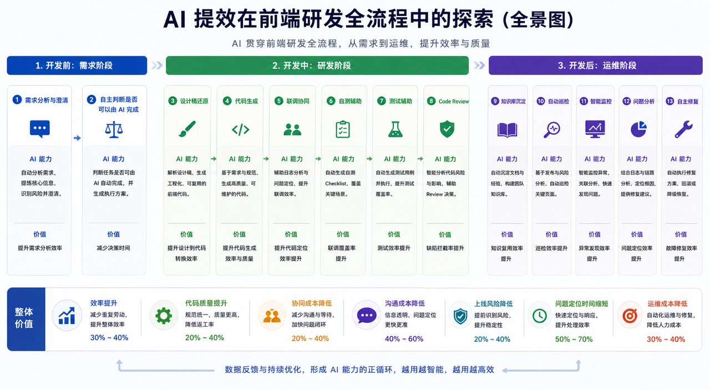
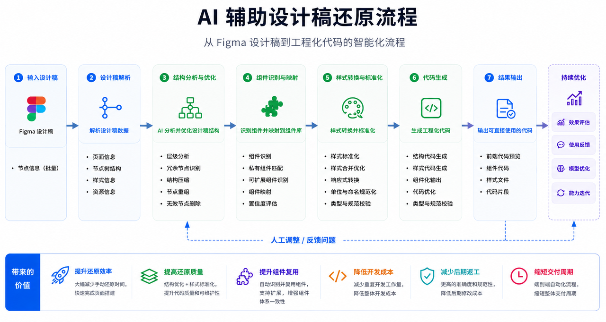
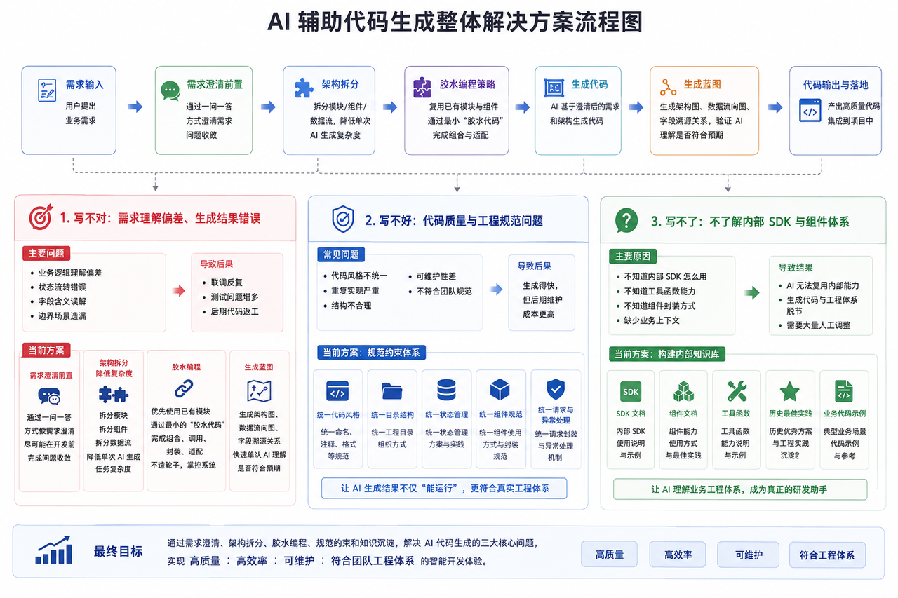
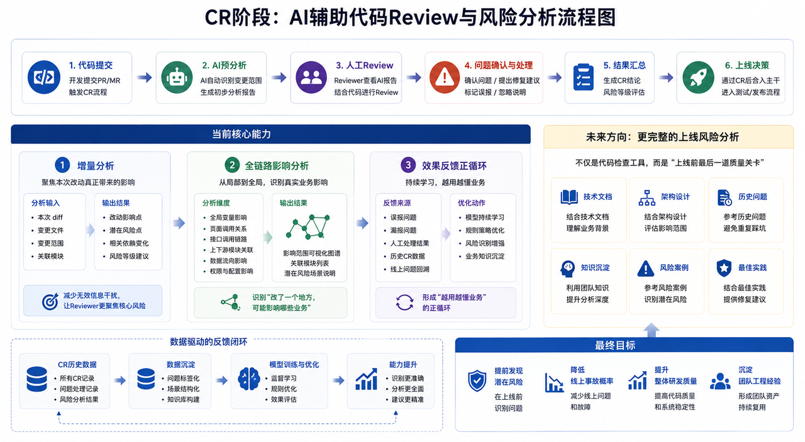
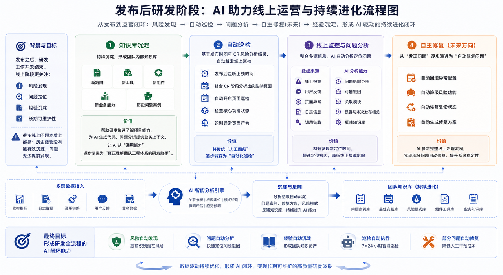

1
需求分析与澄清
自动分析需求、提炼核心信息、识别风险并持续澄清。
价值：提升需求分析效率原 PDF 首图被转译为可横向浏览的 HTML 全景地图：开发前降低理解成本，开发中提升生成与协同效率，开发后沉淀经验并形成反馈闭环。
自动分析需求、提炼核心信息、识别风险并持续澄清。
价值：提升需求分析效率判断任务是否可由 AI 自动完成，并生成执行方案。
价值：减少决策时间解析设计稿，生成工程化、可复用的前端代码。
价值：提升设计到代码转换效率基于需求与规范生成高质量、可维护代码。
价值：提升代码生成效率与质量辅助日志分析、问题定位，并自动生成自测 Checklist 覆盖关键场景。
价值：提升定位效率与自测覆盖率智能分析代码风险与影响，辅助 Review 决策。
价值：缺陷拦截率提升自动生成测试用例并辅助执行，提高测试覆盖率。
价值：测试效率提升沉淀文档与经验，构建团队知识资产。
价值：知识复用效率提升基于发布与风险分析，自动巡检关键页面。
价值：巡检效率提升智能监控异常、关联分析并快速发现问题。
价值：异常发现效率提升结合日志与链路分析，定位根因并提供修复建议。
价值：问题定位效率提升自动执行修复方案，回滚或降低故障影响。
价值：故障修复效率提升
需求理解不清会导致返工、联调反复、测试问题增多，甚至影响上线质量。AI 在这里承担的是需求收敛器和风险雷达。
需求评审后，通过机器人自动提炼核心需求、拆解功能模块、识别风险点。
通过一问一答逐步确认细节，避免一次性生成大量低价值文档。
本地创建开发分支、生成规范文档，并在线沉淀技术方案，统一产品、后端和测试上下文。
通用 Figma 转代码常常“能运行，但无法真正进入业务工程体系”。这里的关键是空间化重组、私有组件识别、工程规范落地与持续优化。
批量读取 Figma 节点、页面信息、样式信息和资源信息。
解析节点结构，补齐设计稿原始层级中不稳定的结构信息。
层级分析、冗余节点识别、结构压缩、节点重组、无效节点剔除。
识别团队私有组件，完成可扩展组件匹配与置信度评估。
样式合并优化、响应式转换、单位规范、类型与规范校验。
生成结构代码、样式代码、组件化输出、代码优化。
输出可直接使用的前端代码、组件代码、样式文件与代码片段。

代码生成不是把需求丢给 AI 就结束，而是用澄清、拆分、胶水编程、蓝图和知识库共同约束它，让结果真正可落地。
用户提出业务需求，进入对话式澄清。
通过一问一答收敛问题，降低理解偏差。
拆分模块、组件和数据流，降低单次生成复杂度。
优先复用已有模块，用最少胶水代码组合、封装和适配。
基于澄清后的需求和架构生成工程代码。
生成架构图、数据流、字段溯源，校验 AI 理解是否符合预期。
产出高质量代码并集成到项目中。

联调阶段最耗时的不是开发本身，而是问题定位、多方沟通、反复确认与修复。AI 适合处理日志、数据比对、错误归因和上下文关联。
传统 CR 受 Reviewer 精力、上下文完整度和全局影响分析能力限制。AI CR 平台的目标是在上线前识别更深层风险。
开发提交 PR/MR，触发 CR 流程。
识别变更范围，生成初步分析报告。
Reviewer 查看 AI 报告，结合代码进行 Review。
确认问题，提出修复建议，标记误报或忽略说明。
生成 CR 结论、风险等级与评价。
通过 CR 后合入主干，进入测试或发布流程。

很多问题不是不会测，而是边界场景、异常流程、状态覆盖和回归范围容易遗漏。AI 可以把“凭经验自测”升级为“系统化检查”。
发布之后研发工作并没有结束。线上阶段更关注风险发现、问题定位、经验沉淀与长期可维护性。

AI 在前端领域的价值不是替代单点工作，而是把研发流程中的经验、上下文和反馈机制产品化。
前端研发已经覆盖需求理解、方案设计、开发联调、质量保障、发布运维和线上问题处理。
通过规范、知识库、蓝图、组件映射与反馈闭环，让生成结果真正进入业务工程。
数据反馈持续优化 AI 能力，形成越用越智能、越用越高效的正循环。